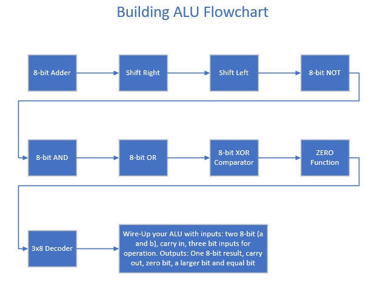
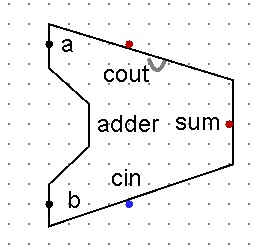
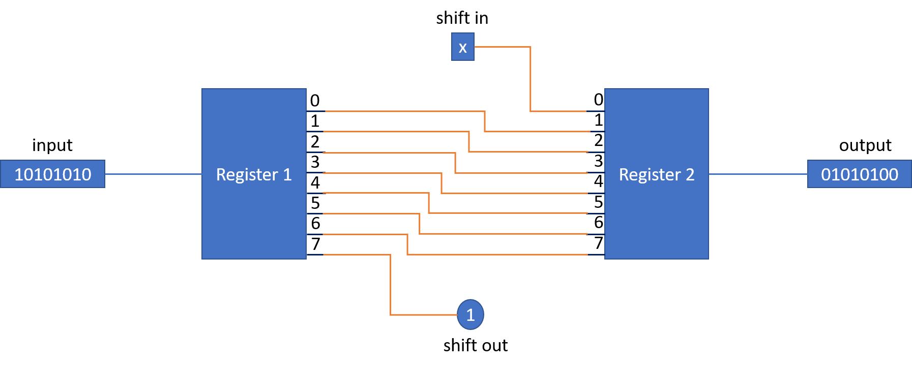

Seven Things a Byte Can Become
Sections 6.1 – 6.5 | Estimated time: ~1.5 hours reading, ~1.4 hours building
6.1 What a register cannot do
Last week you built REGISTER_8BIT, and it is a genuinely good piece of engineering: it captures a byte at a chosen moment, holds it indefinitely, and releases the shared wire when it is not speaking. Wire two together and a value can travel from one to the other in four controlled steps.
Now look at what that machine can actually do. A register that holds 00101101 will hold 00101101 forever, unless something hands it a different byte. And nothing in your machine can produce a different byte. A hundred registers wired together is a filing cabinet, not a computer.
The same gap shows up from the other end. Last week you wrote add $t0, $t1, $t2 in MARS and watched it work — but MARS is a simulator written in Java, and it added those numbers the way any program adds numbers. Your machine could not. There is nothing in it that adds.
By the end of this week you will have built the seven circuits that transform bytes — add them, shift them, invert them, combine them bitwise, compare them — and you will know the MIPS instructions that name those transformations. Every operation your CPU will ever perform on data is in this week.
One thing this week does not give you: the part that chooses. You will finish with nine working circuits and no assembled ALU, because choosing turns out to be its own idea and it deserves its own week. That is Week 7.
6.2 Seven legs, all running
The component you are working toward is called the Arithmetic Logic Unit, and before it is a circuit it is a shape. Two 8-bit inputs, called A and B. One carry-in bit. One 8-bit output, plus a carry-out and three single-bit status outputs. And in between, seven separate circuits — the legs — each computing one operation.
Here is the part that surprises people, and it is worth getting used to now rather than in Week 7:
It is not a machine that does what it is told. It is a machine that does everything, all at once, continuously — and then answers one question about the results.
When you select ADD, the AND leg is also computing. So is the XOR leg, and both shift legs. Their answers are correct, current, and thrown away. The selector does not decide what gets computed; it decides what gets through.
Why that is sensible rather than wasteful: these legs are made of gates, and a gate that nobody is reading costs nothing to leave running. Switching them on and off would take circuitry and, worse, it would take time — the ALU would have to settle after being told what to do, instead of having already settled. And two of the status outputs need to be live regardless of what was selected, which you will see in section 6.8.

Selection is done by a 3-bit opcode. Three bits give eight combinations, and the machine has seven operations, so one code is left over:
| Opcode | Operation | Inputs it uses | What the carry pins mean |
|---|---|---|---|
000 | ADD | A, B, carry-in | carry in / carry out |
001 | SHIFT RIGHT | A, carry-in | shift in / shift out |
010 | SHIFT LEFT | A, carry-in | shift in / shift out |
011 | NOT | A | — |
100 | AND | A, B | — |
101 | OR | A, B | — |
110 | XOR | A, B | — |
111 | unassigned | — | — |
There is no subtract. Not an oversight — section 6.4.
There is one carry-in pin and one carry-out pin, and three operations share them. The adder needs a bit in and a bit out. So does each shift. Rather than carry six pins on the ALU's boundary, the design noticed that three operations need structurally identical extra bits and gave them one pair to share. Only one operation runs at a time as far as the output is concerned, so there is never a fight over them.
That is a small piece of real interface design, and it is the kind of decision that distinguishes a component someone can use from a component with fourteen pins on it.
111 does not produce zero. It produces nothing.Decoder output 7 is wired to nothing at all. When you select 111, no leg is enabled, and nothing drives the output. That is not the same as the output being 00000000, and the difference matters: a zero is a value that something asserted, and this is the absence of anyone asserting.
Real processors face this question for every undefined opcode in their instruction set, and they answer it in different ways — some define an illegal-instruction trap, some leave the behaviour genuinely unspecified. Your machine leaves the leg unconnected, which is the simplest honest answer.
Last week you spent a whole section on a hard idea: a shared wire needs devices that can stop driving rather than drive a zero, because a zero is a value and two devices asserting values onto one wire is a fault — even when they happen to agree. That is why REGISTER_8BIT has controlled buffers in it.
Now look at the ALU: seven legs, all live, all reaching one 8-bit output. It looks like exactly the situation you just learned to be careful about. It is not, and the difference is worth being precise about.
000000000 is the identity for ORSix legs driving 00000000 and one driving its answer, all ORed together, gives you that one answer. Nothing has to let go of anything, because nothing else is saying anything.
So why does the machine use two different schemes? Because they solve different problems. A bus joins components that are far apart, added at different times, and not all known in advance — so it needs a discipline that works without any one component knowing what else is attached. The ALU's output joins seven legs that are fixed, adjacent, and designed together, with a decoder guaranteeing structurally that only one is live.
Where you can guarantee a single driver by construction, OR is simpler and cheaper. Where you cannot, you pay for the buffer. That is an engineering judgment, not a rule, and it is the reason the same machine does it both ways.
6.3 The cheap legs: AND, OR, NOT
Three of the seven legs are the easiest circuits in this course, and it is worth saying so rather than padding them out.
You already know what an AND gate does with two bits. An 8-bit AND does it eight times, side by side: bit 0 of A with bit 0 of B into bit 0 of the output, bit 1 with bit 1 into bit 1, and so on up to bit 7. Eight AND gates, no wiring between them. OR_8BIT is the same with OR gates. NOT_8BIT takes one input and puts eight inverters in its path.
| Circuit | Pins | Contents |
|---|---|---|
AND_8BIT | a[8] b[8] → out[8] | 8 AND gates |
OR_8BIT | a[8] b[8] → out[8] | 8 OR gates |
NOT_8BIT | a[8] → out[8] | 8 NOT gates |
Build all three, verify them, and move on. But before you do, there is something genuinely worth noticing about why they are easy, because it is the single most important idea in computer performance and you can see it clearly right here.
Bit 3 of an AND depends on bit 3 of A, bit 3 of B, and nothing else. It does not need to know what bit 2 decided. So when you change the inputs, all eight output bits settle simultaneously — one gate delay, and the whole byte is correct.
Now think about the adder. Bit 3 of a sum depends on the carry coming out of bit 2, which depends on bit 1, which depends on bit 0. The answer cannot appear all at once; it has to ripple. An 8-bit ripple-carry adder is eight gate delays deep, not one.
Same eight bits. Eight times slower. And the reason is not the complexity of addition — it is that addition has a dependency and AND does not. In Week 15 you will meet the techniques real processors use to buy that time back, and every one of them is an attempt to break a dependency.
With a = 11001010 and b = 10110110:
AND_8BIT→10000010OR_8BIT→11111110NOT_8BITofa→00110101
6.4 The leg you already built, and the one you don't need
Open the .circ file you have been adding to since Week 2 and look at your list of tabs. ADDER_8BIT is already there. You built it in Week 3, out of eight instances of a FULL_ADDER you built once.
Drop one instance of it into your ALU work and you are done with the adder leg. Its pins already match what the ALU needs: a[8], b[8], cin, sum[8], cout. You do not rebuild it, you do not modify it, you do not copy it into a new file.
Three weeks ago, building a full adder and then chaining eight of them probably felt like an exercise. It was not. It was component one of your final project, and today you spent twenty minutes getting the hardest leg of the ALU for free.
Everything in this course works like this. The decoder you built in Week 3 becomes RAM addressing in Week 8 and part of the control unit in Week 11. The register you built last week becomes R0 through R3, the program counter, the memory address register and the instruction register. Nothing you build gets thrown away.

There is no subtract leg
Go back to the opcode table in section 6.2 and look for subtraction. It is not there, and you are going to need to subtract — MIPS has a sub instruction and you will meet it on page 3.
The machine subtracts using the adder. Here is the whole trick:
Run B through NOT_8BIT. Feed the result into the adder along with A. Set the carry-in to 1. The sum that comes out is A − B.
Two legs you already have, plus a pin you already have, and no new hardware whatsoever.
Why does it work? Because of a decision made in Week 1. Negating a two's-complement number means inverting every bit and adding one — so NOT(B) + 1 is −B, and A + (−B) is what you wanted. The carry-in pin supplies the "+ 1" for free, which is why it is there.
In Week 1 the argument for two's complement was that it gives a single representation of zero and that "arithmetic just works." This is what that sentence was worth. Sign-magnitude would need a separate subtractor circuit, and a comparison to decide which operation to run. Two's complement makes the same adder do both jobs, and the only cost is one pin that was already there for carrying.
The cin pin is set to pull-down in Logisim, which means it reads 0 after every simulation reset. So an ordinary addition is an ordinary addition without you doing anything, and setting cin to 1 is always a deliberate act. That saves you from the classic debugging afternoon spent chasing an adder that is quietly adding one.
Pull-down is a property of the pin, not a component — select the pin and change its "Pull behavior" attribute. Nothing is added to your circuit.
Two different things both called overflow
An 8-bit adder produces an 8-bit answer, and sometimes the right answer does not fit. But "does not fit" means two entirely different things depending on how you are reading the bytes, and they do not happen at the same times.
| Unsigned overflow | Signed overflow | |
|---|---|---|
| What it means | the true sum is more than 255 and wrapped around | the two's-complement result has a sign the operands could not have produced |
| How to detect it | the carry-out of bit 7 is 1 | both operands have the same sign and the result's sign differs from it |
| Example | 11111111 + 00000001255 + 1 → 0 | 01111111 + 00000001+127 + 1 → −128 |
11111111 + 00000001 sets the carry-out, so it is an unsigned overflow. Read as signed, it is −1 + 1 = 0, which is perfectly correct — no signed overflow.
01111111 + 00000001 does not set the carry-out, so there is no unsigned overflow — 127 + 1 = 128 fits in eight bits unsigned. Read as signed, it is +127 + 1 = −128, which is badly wrong. That is a signed overflow, and the carry-out says nothing about it.
The adder cannot tell which one you meant. It does not know whether your bytes are signed. It produces both indications and leaves the question to the program — which is exactly why MIPS has both add and addu.
6.5 Moving bits sideways
The last two legs on this page move every bit one position along. A bit falls off one end, and a bit arrives at the other.
Take 10101010. Shift it left and every bit moves up one place: the 1 that was in bit 7 falls off the top, and bit 0 is left empty and has to be filled from somewhere. Shift it right and every bit moves down one: the 0 from bit 0 falls off the bottom and bit 7 needs filling.
"Falls off" and "needs filling" are exactly the two carry pins from section 6.2, doing their second job:
| Leg | Every bit moves | shin fills | shout catches |
|---|---|---|---|
SHIFT_LEFT | bit i → bit i+1 | bit 0 | bit 7 |
SHIFT_RIGHT | bit i → bit i−1 | bit 7 | bit 0 |
Inside the leg these pins are called shin and shout, because this circuit is not adding anything and borrowing the adder's vocabulary would be confusing. When the ALU is assembled in Week 7 they connect to the shared CI and CO pins.
A shift is re-indexing — it does not compute anything. Use a splitter to break the 8-bit input into individual bits, wire each one across to the next position, put a constant or the shin pin on the vacated end, and take the departing bit out to shout. No gates at all.
The version of this circuit in the reference design is built differently: two REGISTER_8BIT instances with set and enable tied permanently to 1, so that each one passes its input straight through, with the offset wiring between them. Either construction is accepted for the checkpoint, provided the pin names and behaviour match the table above. If your instructor tells you the two-register version is required for your file, build that one.

With a = 10101010 and shin = 0:
SHIFT_LEFT→out = 01010100,shout = 1SHIFT_RIGHT→out = 01010101,shout = 0
Then set shin = 1 and check that the bit actually arrives at the end you expect.
Shifting looks like multiplying and dividing. Sometimes it is.
Shift 00000110 (6) left and you get 00001100 (12). Shift it right and you get 00000011 (3). That is not a coincidence — in base 2, moving every digit one place left multiplies by 2, exactly as moving a decimal digit left multiplies by 10.
This is genuinely useful. A shift is one of the fastest things a processor can do, and multiplication is one of the slowest, so compilers turn x * 8 into three left shifts without being asked.
Take 10101010 and shift right with shin = 0. You get 01010101.
Read as unsigned: 170 → 85. Exactly half. Correct.
Read as signed: −86 → +85. Not half of −86, and not even negative any more. The sign bit was overwritten by the zero you shifted in.
This is a different failure from unsigned overflow in section 6.4, and it fails for a different reason — nothing was lost off the end that mattered, the problem is that bit 7 means something in a signed value and the shift treated it as an ordinary bit.
The fix is a shift that copies the sign bit back into itself instead of shifting a zero in. MIPS calls it sra, "shift right arithmetic." Your machine does not have one — it has the logical shift only, and that is a real limit of this design rather than something you will add later.
Where you are
Five of the seven legs are built: AND_8BIT, OR_8BIT, NOT_8BIT, SHIFT_LEFT, SHIFT_RIGHT, plus the adder you already owned. Test each one on its own before moving on — a leg that is wrong now is a leg that is wrong inside an assembled ALU in Week 7, where it will be very much harder to find.
The two that remain are the interesting ones. The XOR leg turns out to answer three questions at once rather than one, and the answers it gives are what will eventually let your CPU make a decision.